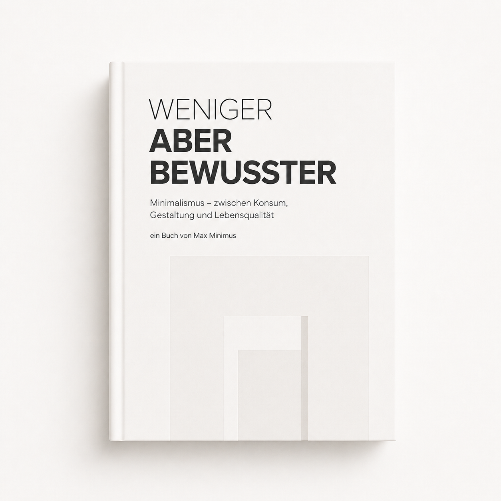
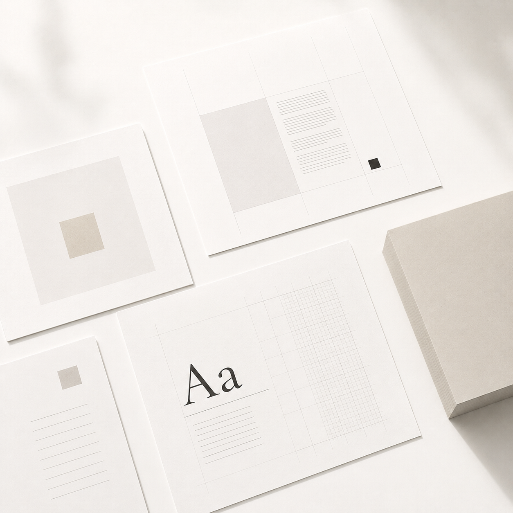
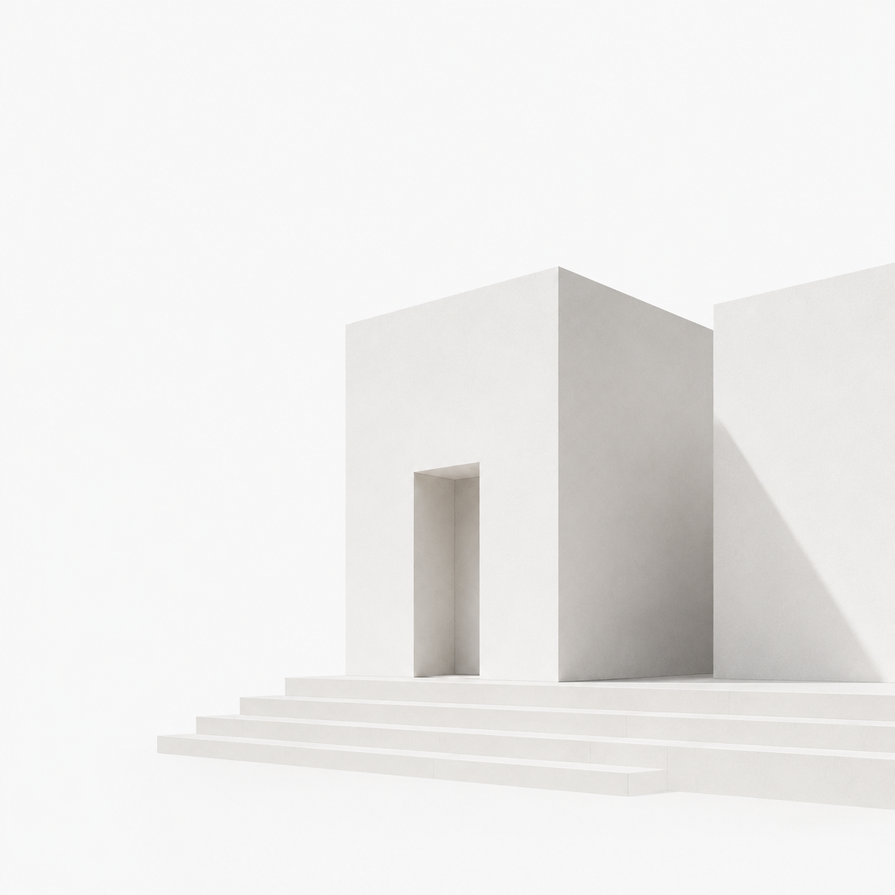
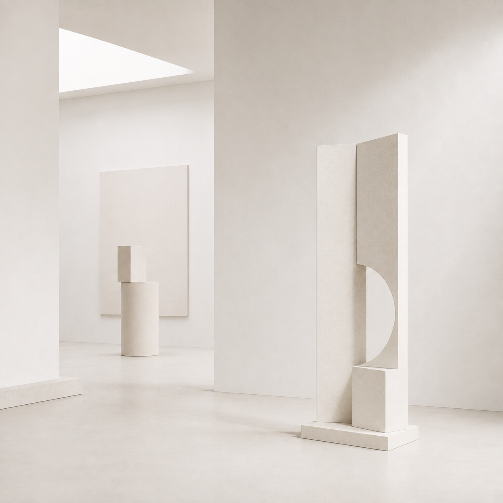
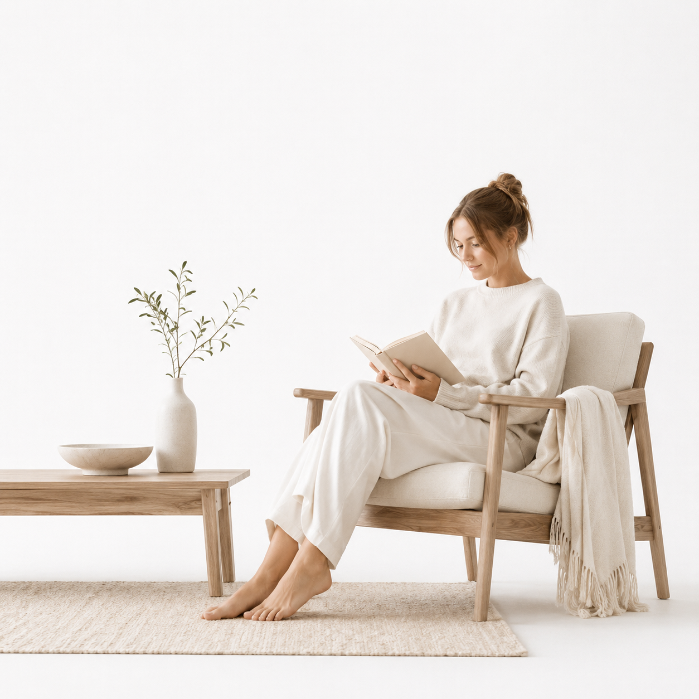
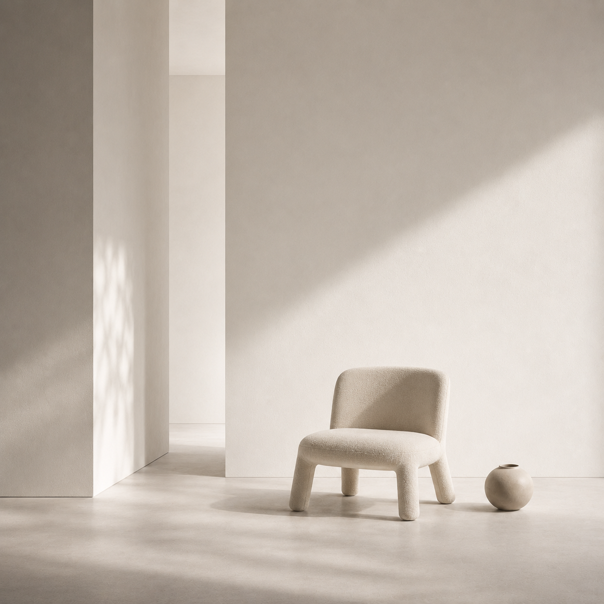
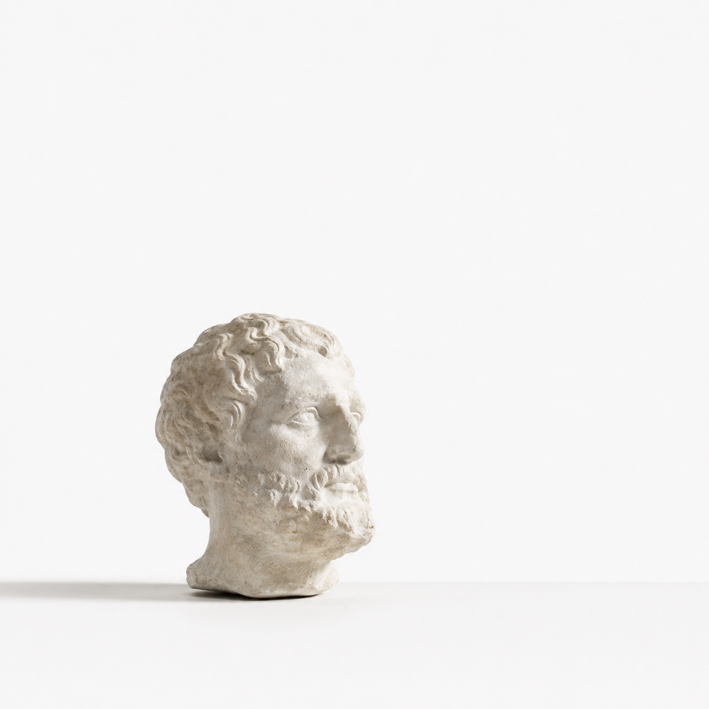
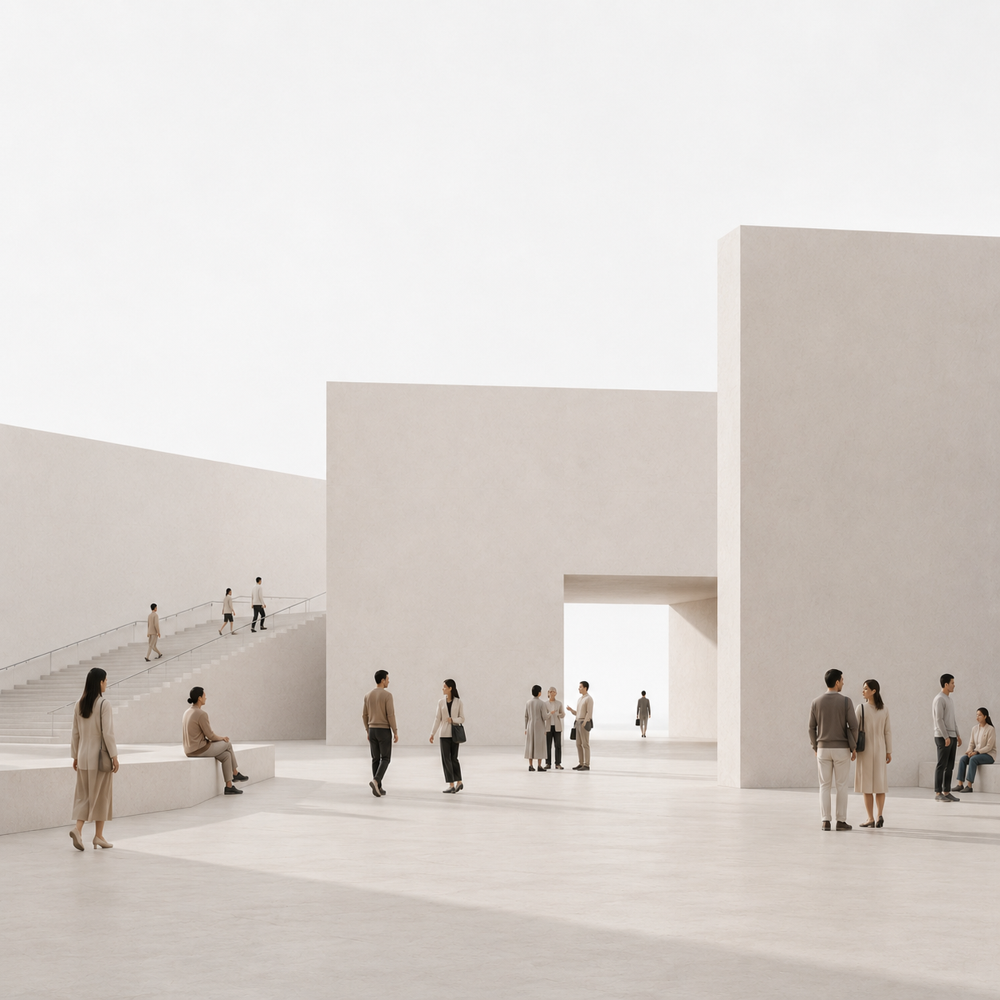

Weniger aber bewusster
Minimalismus ist mehr als eine reduzierte Ästhetik. Er ist eine Haltung zum Gestalten, Leben und Denken. Was passiert, wenn wir weglassen, was nicht wichtig ist?
Mehr erfahren

01 Design
Wie wir Dinge gestalten
Ordnung | Raster | Typografie

02 Architektur
Wie wir Räume gestalten
Raum | Licht | Material

03 Kunst
Wie Reduktion zum Ausdruck wird
Form | Objekt | Leere

04 Lebensweise
Wie wir unseren Alltag gestalten
Besitz | Alltag | Bewusstsein

05 Psychologie
Was macht Reduktion mit uns?
Reize | Aufmerksamkeit | Wahrnehmung

06 Philosophie
Was brauchen wir wirklich?
Notwendig | Nützlich | Überflüssig

07 Gesellschaft
Kann man sich „weniger“ überhaupt leisten?
Weniger ist ein Luxus, wenn man die Wahl hat.
Weniger aber bewusster
„Minimalismus – zwischen Konsum, Gestaltung und Lebensqualität“ ein Buch von Max Minimus
Buch bestellen